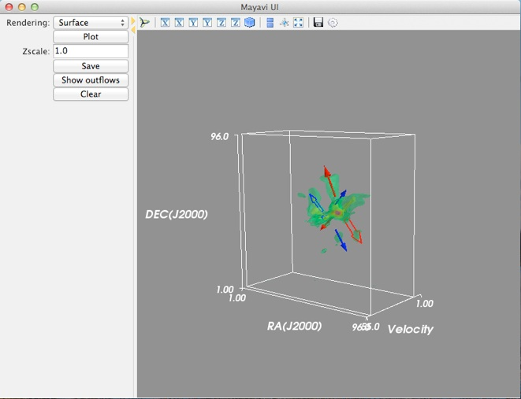
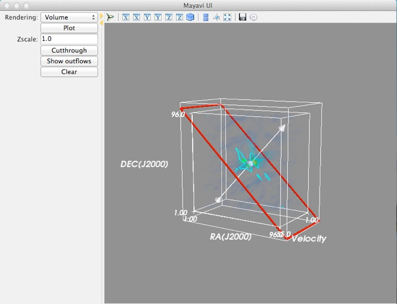

The code can be run with ‘python TDViz_l1551irs5.py’, as long as you have all the required python packages installed. A snapshot of the interface is shown below.



Here we use surface rendering, i.e. represent the intensity with 3-d iso-surfaces. The redder color means larger intensity, while the greener color means smaller intensity. After we click the ‘Show outflows’ button, the code then add arrows that marks outflows identified by Wu et al. (2009) into the scene. Colors of the arrows stand for blue/red-shifted lobes respectively, and their shapes correspond to different outflow components.
The ‘zscale’ dialog is used to adjust the relative scale of the velocity axis. Sometimes we have a large spatial range but only a few velocity channels or vice versa, so the datacube looks either too ‘flat’ or too ‘narrow’, then we can adjust this parameter to make the it more “cubic”.
The ‘save’ button can be used to save the current scene in an object file.
Then we use volume rendering to show the same datacube. Here we have the option to add a cutthrough view that can show the intensity on the cutthrough plane with contours. This is an analog of Position-Velocity diagram that is often seen in star formation papers. You can rotate the axis of the cutthrough plane and move the plane along the axis, to inspect the detail of the kinematics.